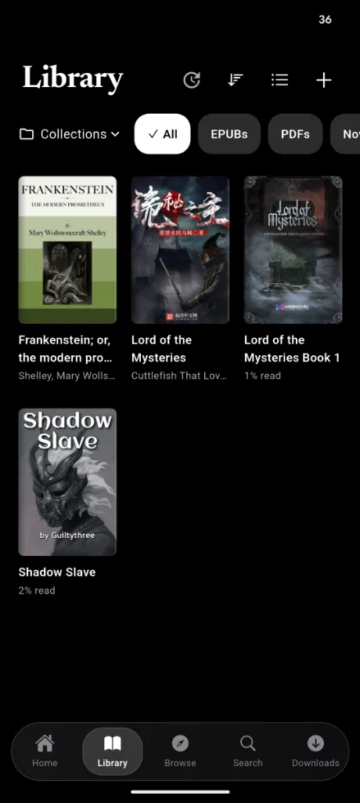
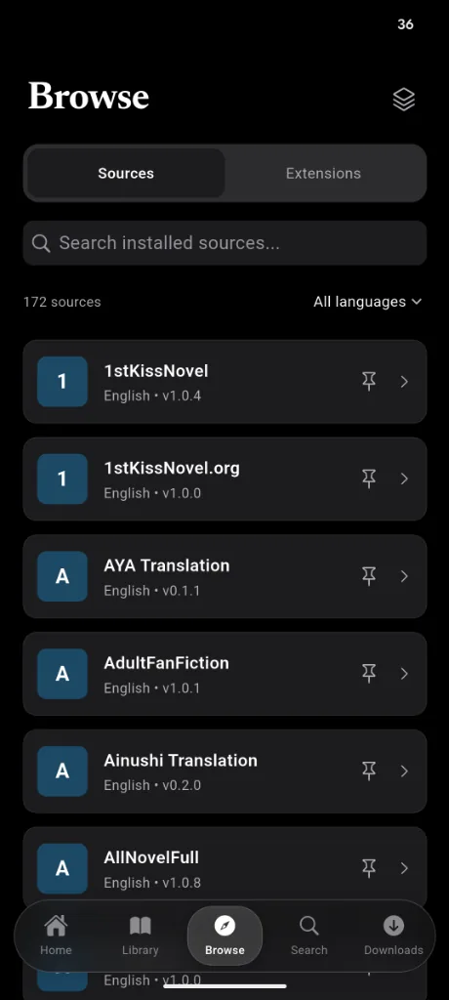
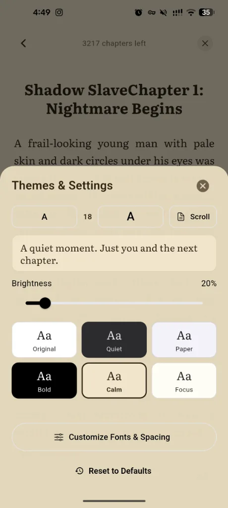
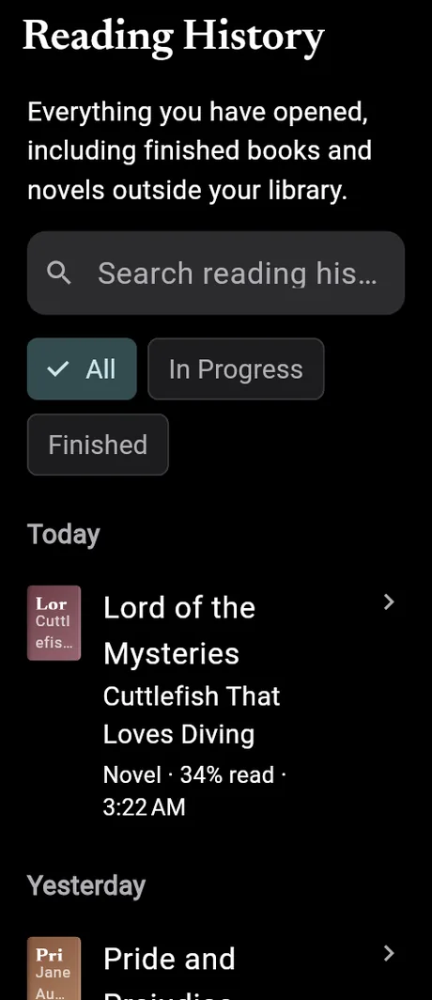
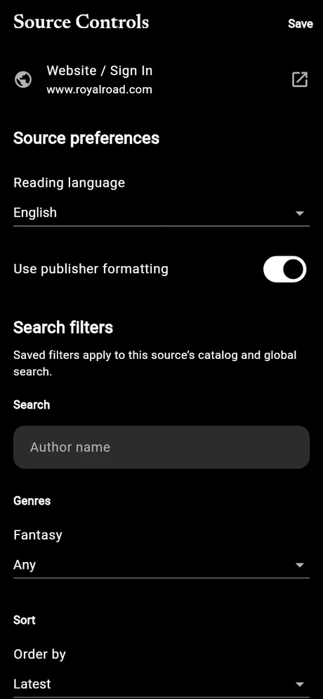

A reader that feels like a book
Scroll or turn pages. Tune font size, margins, line spacing and indentation live, with four bundled serif typefaces.
Alpha · Free and open source
Hon is a calm, private reading app for Android. Web novels, EPUBs and PDFs on one shelf, with the look and feel of Apple Books.
Features
Hon stays out of the way. Clean cards, soft glass, and a reader that disappears once you start.
Scroll or turn pages. Tune font size, margins, line spacing and indentation live, with four bundled serif typefaces.
Browse and search 170+ web novel sources out of the box. Runs Shosetsu-compatible extensions and lets you add extension repositories.
Chapters download in the background and resume after the app closes or the phone restarts. Images are saved for offline reading.
Import local files next to your web novels. Native EPUB pagination, a dedicated PDF reader, contents and in-book search.
Collections, library updates for new chapters, reading history, bookmarks and highlights. Pick up exactly where you left off.
No accounts, no ads, no tracking. Everything lives on your phone, with full backup and restore when you switch devices.
Reading themes
From bright daylight to a pitch black page for OLED screens. Tap a theme to preview it.
Bundled typefaces: Newsreader, Literata, Lora and Libre Baskerville.
❦
The rain had settled into a soft, patient rhythm against the window. She pulled the blanket closer, found her place, and the room around her slowly faded.
It was always like this with a good book. First the noise, then the words, and then nothing at all except the story, unfolding one quiet page at a time.
A closer look





Download
Free, no sign-up. Grab the newest build from GitHub Releases.
arm64-v8a build. Smaller and right for almost every phone and tablet from the last several years.
arm64-v8a APK UniversalIncludes arm64, armeabi-v7a and x86_64. Pick this for older phones, emulators, or if you are not sure.
Universal APKHon is in early alpha, so expect rough edges. All releases and notes · Source code
Getting started
Download the APK on your phone and open it. If Android asks, allow your browser or file manager to install unknown apps.
Open Browse to explore sources, or use Search to look through your library and chosen sources at once. Import your own EPUBs and PDFs from the Library.
Add books to your library, download chapters for offline reading, and tap the page while reading to change theme, font and spacing.
Go to Settings, then Extension repositories, and paste the repository URL. Hon syncs its index and the new sources show up in Browse. Repositories built for Shosetsu work here.
Some sites need a login or a Cloudflare check. Open the source's settings from Browse and use the in-app login. Your session stays on your device.
Open Settings, then Backup & restore, to export your library, progress and settings to a file. Restore it on a new phone in one tap.
FAQ
Something missing? Ask on Discord.
Yes. Hon is free and open source under the GPL-3.0 license. There are no ads, subscriptions or in-app purchases.
Hon doesn't host any content. It reads from public websites through source extensions, the same kind used by Shosetsu. All content belongs to its original authors and sites.
Hon runs Shosetsu-style Lua extensions with its own native engine, and you can add extension repositories in Settings. Most sources work; if one doesn't, let us know on Discord or GitHub.
Almost everyone should pick the recommended arm64 build. Choose the universal build for older 32-bit phones, x86 emulators, or if the arm64 one won't install.
Not right now. Hon is built for Android phones and tablets.
No. There are no accounts and no telemetry. Your library, progress and downloads stay on your device. Hon only connects to the sources you use and the extension repositories you add.
Apps installed outside the Play Store always show this warning. Hon's code is public on GitHub, and every release is built from it. Only download Hon from the official GitHub Releases page.
Suggest features, request sources, test early builds and share your favorite reading setups.